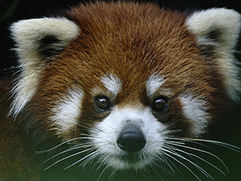
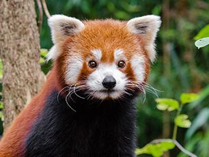
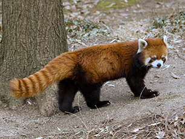
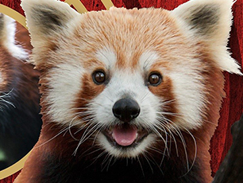

About
Red Pandas
The red panda (Ailurus fulgens) is a carnivoran native to the eastern Himalayas and southwestern China. It is listed as Endangered on the IUCN Red List because the wild population is estimated at fewer than 10,000 mature individuals and continues to decline due to habitat loss and fragmentation, poaching, and inbreeding depression. Despite its name, it is not closely related to the giant panda. The red panda has reddish-brown fur, a long, shaggy tail, and a waddling gait due to its shorter front legs; it is roughly the size of a domestic cat, though with a longer body. It is arboreal and feeds mainly on bamboo, but also eats eggs, birds, and insects. It is a solitary animal, mainly active from dusk to dawn, and is largely sedentary during the day. It is also called the lesser panda, the red bear-cat, and the red cat-bear. The red panda is the only living member of the genus Ailurus and the family Ailuridae. It has previously been placed in the raccoon and bear families, but the results of phylogenetic analysis provide strong support for its taxonomic classification in its own family, Ailuridae, which is part of the superfamily Musteloidea, along with the weasel, raccoon and skunk families. Traditionally it was thought to consist of two subspecies. However, results of genetic analysis indicate that there are probably two distinct red panda species, the Chinese red panda and the Himalayan red panda, which genetically diverged 0.22 million years ago.
Physical
Characteristics
The red panda has long, soft, reddish-brown fur on the upper parts, blackish fur on the lower parts, and a light face with tear markings and white badges similar to those of a raccoon, but each individual can have distinctive markings. Its skull is roundish with medium-sized upright ears, its nose is black, and its eyes are blackish. Its teeth are robust. Its long, bushy tail with six alternating transverse ochre rings provide balance and excellent camouflage in a habitat with moss- and lichen-covered trees. The legs are black and short with thick fur on the soles of the paws. This fur serves as thermal insulation on snow-covered or icy surfaces and conceals scent glands, which are also present on the anus. The head and body length of a red panda measures 50 to 64 cm, and its tail is 28 to 59 cm long. Males weigh 3.7 to 6.2 kg and females 3 to 6.0 kg. The red panda is specialized as a bamboo feeder with strong, curved and sharp semi-retractile claws standing inward for grasping narrow tree branches, leaves, and fruit. Like the giant panda, it has a "false thumb", which is an extension of the wrist bone. When descending a tree head-first, the red panda rotates its ankle to control its descent, one of the few climbing species to do so.
Behavior
The red panda is territorial; it is solitary except during mating season. It is generally quiet except for some twittering, tweeting, and whistling communication sounds. It has been reported to be both nocturnal and crepuscular, sleeping on tree branches or in tree hollows during the day and increasing its activity in the late afternoon and early evening hours. It sleeps stretched out on a branch with legs dangling when it is hot, and curled up with its tail over the face when it is cold. It is very heat-sensitive, with an optimal "well-being" temperature between 17 and 25 °C. Shortly after waking, red pandas clean their fur somewhat like a cat would, licking their front paws and then rubbing their backs, torsos, and sides. They also rub their backs and bellies along the sides of trees or rocks. Then they patrol their territories, marking with urine and a weak musk-smelling secretion from their anal glands. They search for food running along the ground or through the trees. Red pandas may use their forepaws alternately to bring food to their mouths or place food directly into their mouths. Predators of the red panda include the snow leopard (Panthera uncia), mustelids, and humans. If they feel threatened or sense danger, they may try to escape by climbing a rock column or tree. If they can no longer flee, they stand on their hind legs to make themselves appear larger and use the sharp claws on their front paws to defend themselves. A red panda became a visitor attraction in Japan for his ability to stand upright for ten seconds at a time.
Diet
Red pandas are excellent climbers, and forage largely in trees. They eat mostly bamboo, and may eat small mammals, birds, eggs, flowers, and berries. In captivity, they were observed to eat birds, flowers, maple and mulberry leaves, and bark and fruits of maple, beech, and mulberry. Like the giant panda, they cannot digest cellulose, so they must consume a large volume of bamboo to survive. Their diets consist of about two-thirds bamboo, but they also eat mushrooms, roots, acorns, lichens, and grasses. Occasionally, they supplement their diets with fish and insects. They do little more than eat and sleep due to their low-calorie diets. Bamboo shoots are more easily digested than leaves, exhibiting the highest digestibility in summer and autumn, intermediate digestibility in the spring, and lowest digestibility in the winter. These variations correlate with the nutrient contents in the bamboo. Red pandas process bamboo poorly, especially the cellulose and cell wall components. This implies microbial digestion plays only a minor role in their digestive strategy. To survive on this poor-quality diet, they have to eat the high-quality sections of the bamboo plant, such as the tender leaves and shoots, in large quantities, over 1.5 kg of fresh leaves and 4 kg of fresh shoots daily. This food passes through the digestive tract fairly rapidly (about 2–4 hr) so as to maximize daily nutrient intake. Red pandas can taste artificial sweeteners, such as aspartame, and are the only nonprimates known to be able to do so.
Reproduction
Red pandas are able to reproduce at around 18 months of age, and are fully mature at two to three years. Adults rarely interact in the wild except to mate. Both sexes may mate with more than one partner during the mating season from mid-January to early March. A few days before birth, females begin to collect material, such as brushwood, grass, and leaves; to build a nest, which is normally located in a hollow tree or a rock crevice. After a gestation period of 112 to 158 days, the female gives birth in mid-June to late July to one to four (usually 1–2) blind and deaf cubs weighing 110 to 130 g each. After birth, the mother cleans the cubs, and can then recognize each by their smell. At first, she spends 60% to 90% of her time with the cubs. After the first week, the mother starts spending more time outside the nest, returning every few hours to nurse and groom the cubs. She moves the young frequently among several nests, all of which she keeps clean. The cubs start to open their eyes at about 18 days of age. By about 90 days, they achieve full adult fur and coloring, and begin to venture out of the nest. They also start eating solid foods at this point, weaning at around six to eight months of age. The cubs stay with their mother until the next litter is born in the following summer. Males rarely help raise the young, and only if they live in pairs or in small groups. A red panda's lifespan ranges between eight and 10 years, but individuals have been known to reach 15 years.
Threats
The primary threats to red pandas are direct harvest from the wild, live or dead, competition with domestic livestock resulting in habitat degradation, and deforestation resulting in habitat loss or fragmentation. The relative importance of these factors is different in each region, and is not well understood. For instance, in India, the biggest threat seems to be habitat loss followed by poaching, while in China, the biggest threat seems to be hunting and poaching. A 40% decrease in red panda populations has been reported in China over the last 50 years, and populations in western Himalayan areas are considered to be lower. Deforestation can inhibit the spread of red pandas and exacerbate the natural population subdivision by topography and ecology, leading to severe fragmentation of the remaining wild population. Fewer than 40 animals in four separate groups share resources with humans in Nepal's Langtang National Park, where only 6% of 1,710 km2 is preferred red panda habitat. Although direct competition for food with domestic livestock is not significant, livestock can depress bamboo growth by trampling. Small groups of animals with little opportunity for exchange between them face the risk of inbreeding, decreased genetic diversity, and even extinction. In addition, clearcutting for firewood or agriculture, including hillside terracing, removes old trees that provide maternal dens and decreases the ability of some species of bamboo to regenerate. In south-west China, red pandas are hunted for their fur, especially for the highly valued bushy tails, from which hats are produced. In these areas, the fur is often used for local cultural ceremonies. In weddings, the bridegroom traditionally carries the hide. The "good-luck charm" red panda-tail hats are also used by local newly-weds. This practice may be quite old, as the red panda seems to be depicted in a 13th-century Chinese pen-and-ink scroll showing a hunting scene. Little or no mention of the red panda is made in the culture and folklore of Nepal. In the past, red pandas were captured and sold to zoos. In an article appearing in the International Zoo News in 1969, one reported he personally had handled 350 red pandas in 17 years. Due to CITES, this zoo harvest has decreased substantially in recent years, but poaching continues, and red pandas are often sold to private collectors at exorbitant prices. In some parts of Nepal and India, red pandas are kept as pets. The red panda has a naturally low birth rate (usually one single or twin birth per year), and a high death rate in the wild.
Distribution and
Habitat
The red panda is endemic to the temperate forests of the Himalayas, and ranges from the foothills of western Nepal to China in the east. Its easternmost limit is the Qinling Mountains of the Shaanxi Province in China. Its range includes southern Tibet, Sikkim and Assam in India, Bhutan, the northern mountains of Burma, and in south-western China, in the Hengduan Mountains of Sichuan and the Gongshan Mountains in Yunnan. It may also live in south-west Tibet and northern Arunachal Pradesh, but this has not been documented. Locations with the highest density of red pandas include an area in the Himalayas that has been proposed as having been a refuge for a variety of endemic species in the Pleistocene. The distribution range of the red panda should be considered disjunct, rather than continuous. A disjunct population inhabits the Meghalaya Plateau of north-eastern India. The red panda lives between 2,200 and 4,800 m altitude, inhabiting areas of moderate temperature between 10 and 25 °C with little annual change. It prefers mountainous mixed deciduous and conifer forests, especially with old trees and dense understories of bamboo. During a survey in the 1970s, signs of red pandas were found in Nepal's Dhorpatan Hunting Reserve. Their presence was confirmed in spring 2007 when four red pandas were sighted at elevations ranging from 3,220 to 3,610 m. Its westernmost distribution is in Rara National Park. In 2018, red pandas were sighted at elevations of 3,150–3,650 m in Nepal's Lamjung District. The red panda population in Sichuan Province is larger and more stable than the Yunnan population, suggesting a southward expansion from Sichuan into Yunnan in the Holocene. The red panda has become extirpated from the Chinese provinces of Guizhou, Gansu, Shaanxi, and Qinghai.
Gallery

{kind=link}
{kind=link}
{kind=link}
{kind=link}
{kind=link}
Recent
News
-

WHERE DO RED PANDAS LIVE? AND OTHER RED PANDA FACTS
15 May 2021Red pandas, the russet-furred forest dwellers, spend much of their time in the trees. Unfortunately, they're experiencing a loss of crucial nesting trees and diet staples like bamboo, leading to a decline in population...
-

Facts
8 May 2021The red panda is slightly larger than a domestic cat with a bear-like body and thick russet fur. The belly and limbs are black, and there are white markings on the side of the head and above its small eyes...
-

Red Panda Wiki
2 May 2021The red panda (Ailurus fulgens) is a carnivoran native to the eastern Himalayas and southwestern China. It is listed as Endangered on the IUCN Red List because the wild population is estimated at fewer than 10,000 mature individuals and continues to decline due to habitat loss and fragmentation, poaching, and inbreeding depression...
-
Red Panda Nat Geo
30 April 2021A western red panda (Ailurus fulgens fulgens), a subspecies of red panda, photographed at Chattanooga Zoo in Tennessee...
-
Animal Facts Guide
24 April 2021Sometimes people call red pandas “lesser pandas” or “firefoxes”. But red pandas are actually not closely related to giant pandas, foxes, or even raccoons. Instead, the red panda, with its distinctive round face, red and black fur, and bushy ringed tail, is in a family of its own, Ailuridae...
-

Red Panda
12 April 2021These furry fuzzy family favourites are actually more closely related to racoons than the black and white giant pandas...
-
Red Pandas China Higlight
26 March 2021Red pandas (or lesser pandas) are an anomaly among animals: they have long, fluffy striped tails like a raccoon, and faces and diets that resemble a giant panda's, but they clean themselves like a cat...
-
Wildlife of China The red
24 April 2021The red panda is an endangered species that is native to China, much like its namesake, the giant panda. Even though they're both called "panda" , the red panda is a totally different species from the more commonly recognized black and white bear...
-
Is a Red Panda a Bear?
8 March 2021Sept. 19 is International Red Panda Day! Whether you know them as red pandas, red bear-cats, firefoxes, first pandas, lesser pandas or simply “the other pandas,” get to know these ferociously furry animals with a few fun facts...
-
Columbus Zoo Looking For Missing Red Panda
26 February 2021POWELL, Ohio (AP) — Columbus zoo officials are looking for a missing red panda, but they say there is no danger to the public...
-
INTERESTING FACTS ABOUT THE RED PANDA
24 February 2021Whether it’s one of your absolute favorite animals or you’ve never even heard of them, red pandas are adored by people all over the world thanks to their endearing face, soft, vibrant red-colored coat, bushy ringed tail and compact size...
-
Red Pandas Detroid Zoo
20 February 2021At the Detroit Zoo The Detroit Zoo is home to five red pandas. Three red pandas live in the Holtzman Wildlife Foundation Red Panda Forest: male Ravi, born in 2016, female Ash, born in 2015, and their daughter Scarlet, who was born in July of 2020...